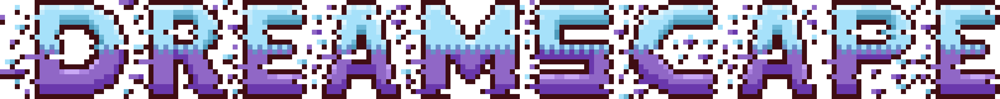
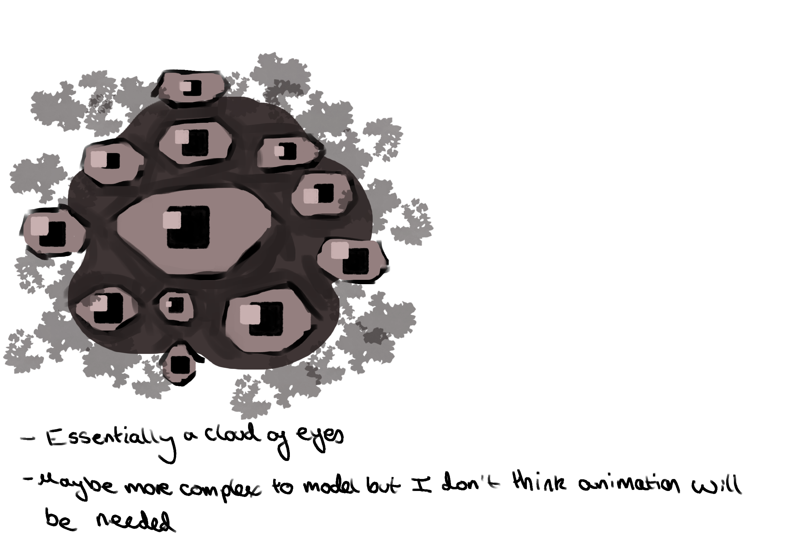
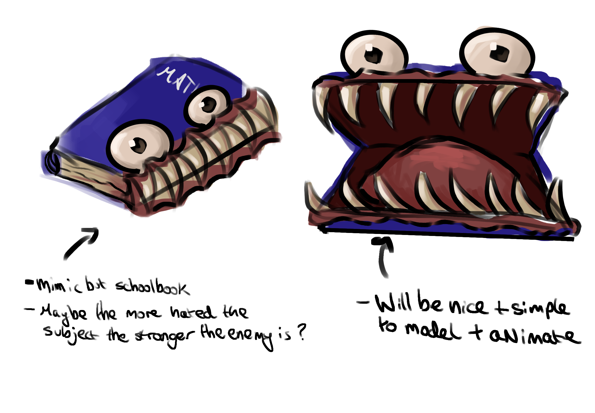
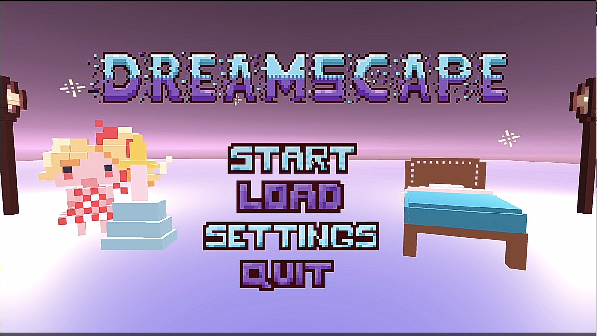
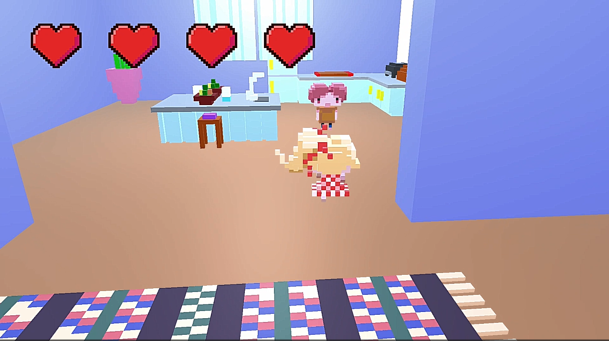
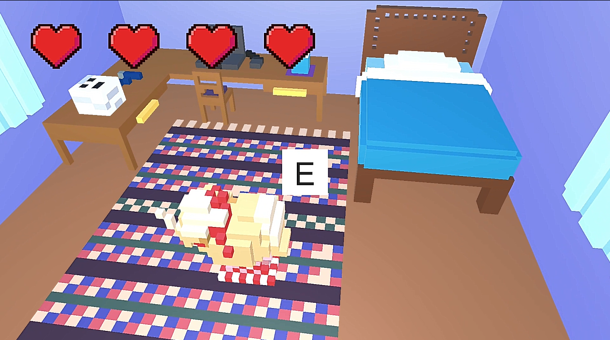
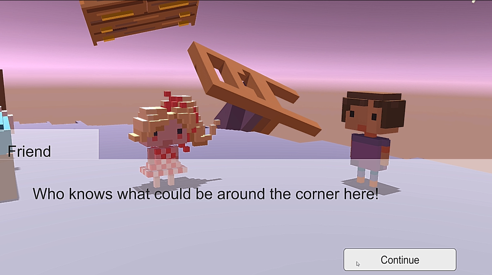
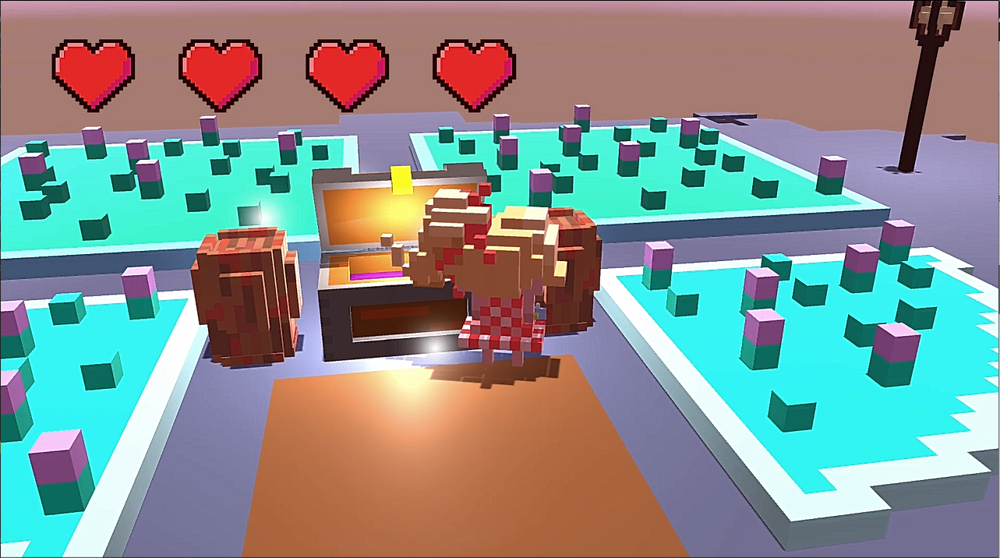
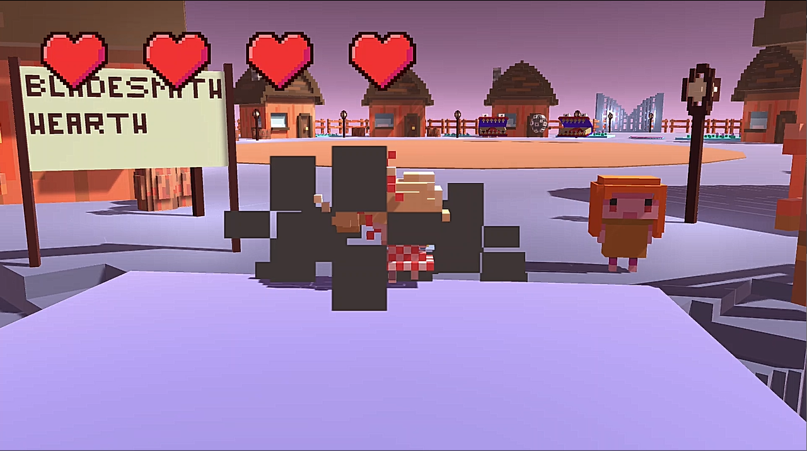
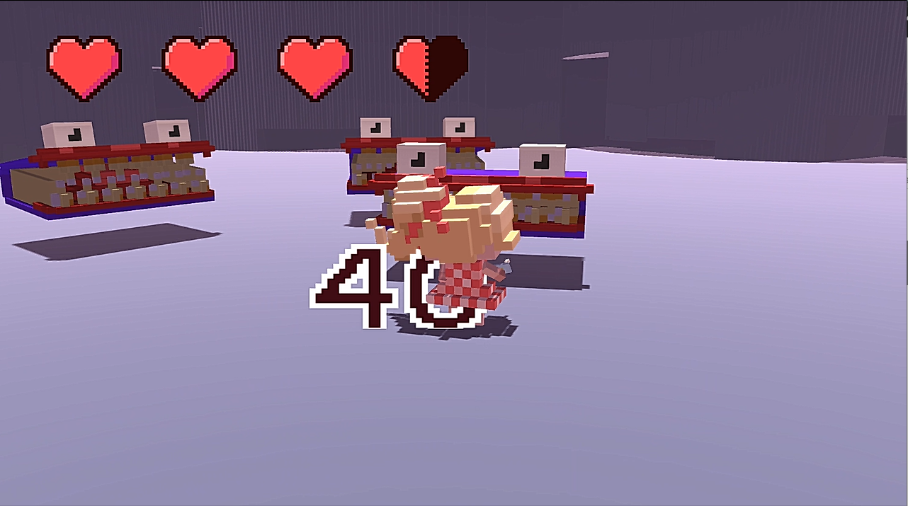

Thrust into a mysterious environment after trying to simply take a nap, you the player now have to travel through the surreal world of dreams to get your friend back before the nightmares take over! Fight against evil forces to save the beatutiful dream world and restore peace. An adventure of fun and mystery await...
Dreamscape Breakdown
Dreamscape is my my project for the second year of my games tech course.
The gameplay was inspired from the game Skylanders with all of the fun small easy puzzles the player had to complete appealing to a younger target audience. This game was a personal challenge that incorporated all of the skills I had learnt throughout the course into one: the design, narrative, visuals, gameplay and more. The project was worked on over the course of roughly 9 months just by myself with the sole aim to make everything within the game by myself as well as teach myself as much Unity C# as possible!
My game was also submitted for the ACC awards at my college, where it won and went on to compete against other winning games across the country.
Environmental Concepts

The following image shows some of the concpets I was exploring while trying to create the visual aesthetic for Dreamscape. Being a game exploring the concept of dreams and having this as one of its selling points, the game would have to correctly represent this feeling. The moodboard colour scheme generally contains a lot of blues, pinks and purples, whith themes of very surreal and unrealistic sceneery, which is what I wanted to capture in the design of my own environments.
Enemy Concepts


Here are some of the concepts I experimented with and eventually implemented into my game. I liked the idea of the enemies being linked to things that the player's character may not like or be scared of to make the dream world feel more surreal and personalized. For example, I made book mimics, with different colours of book depending on difficulty but the subjects that the character hated the most were more powerful and 'evil' in the dream world.
Gallery






